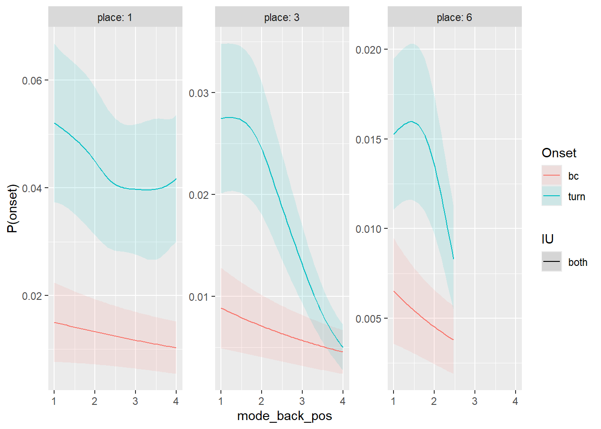
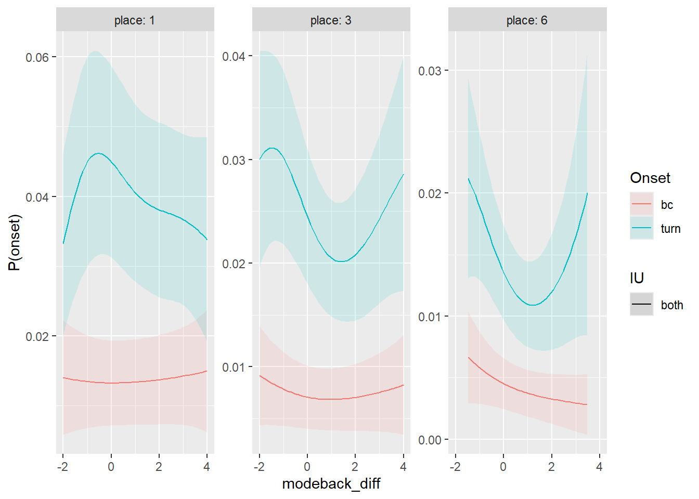
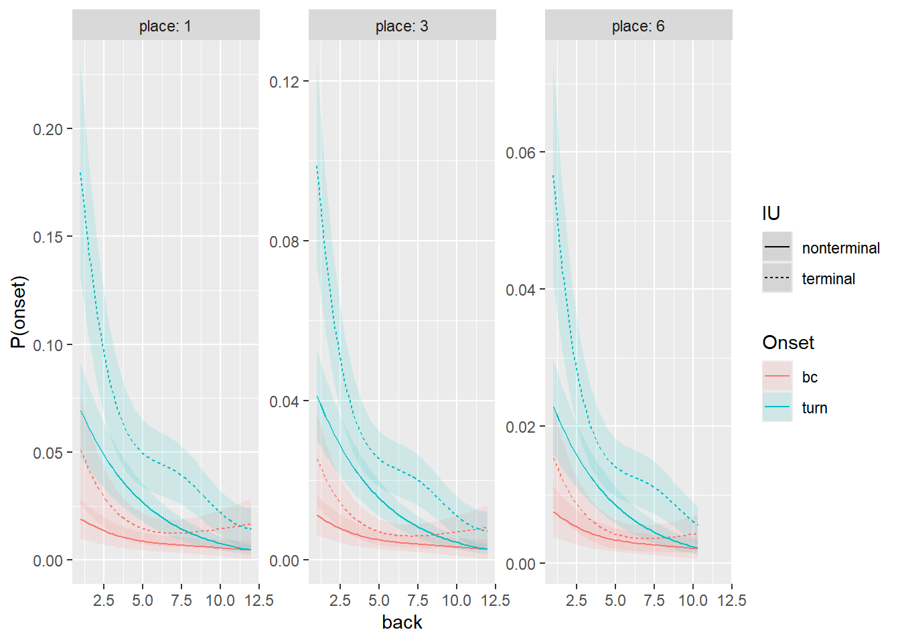
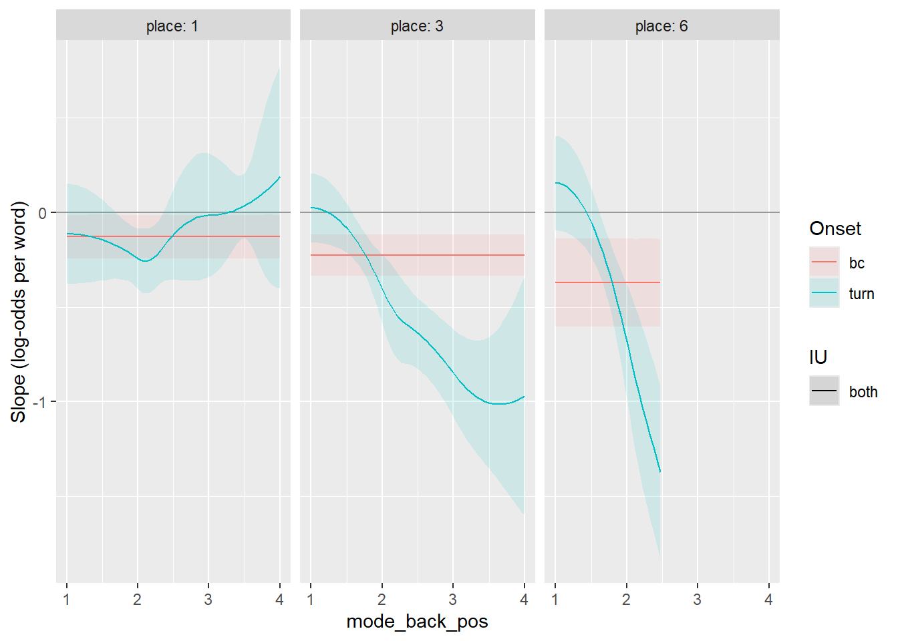
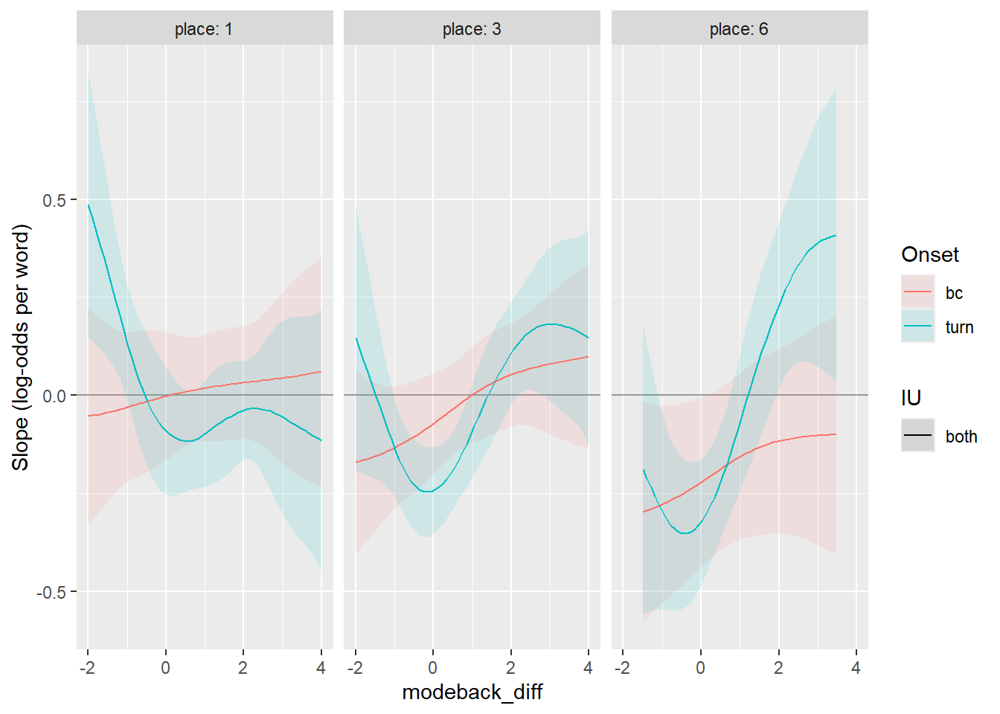
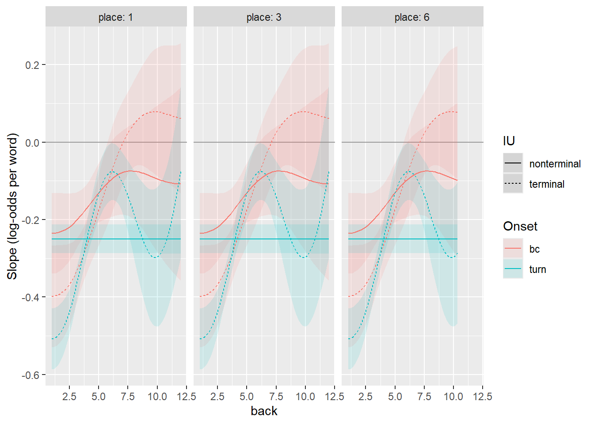
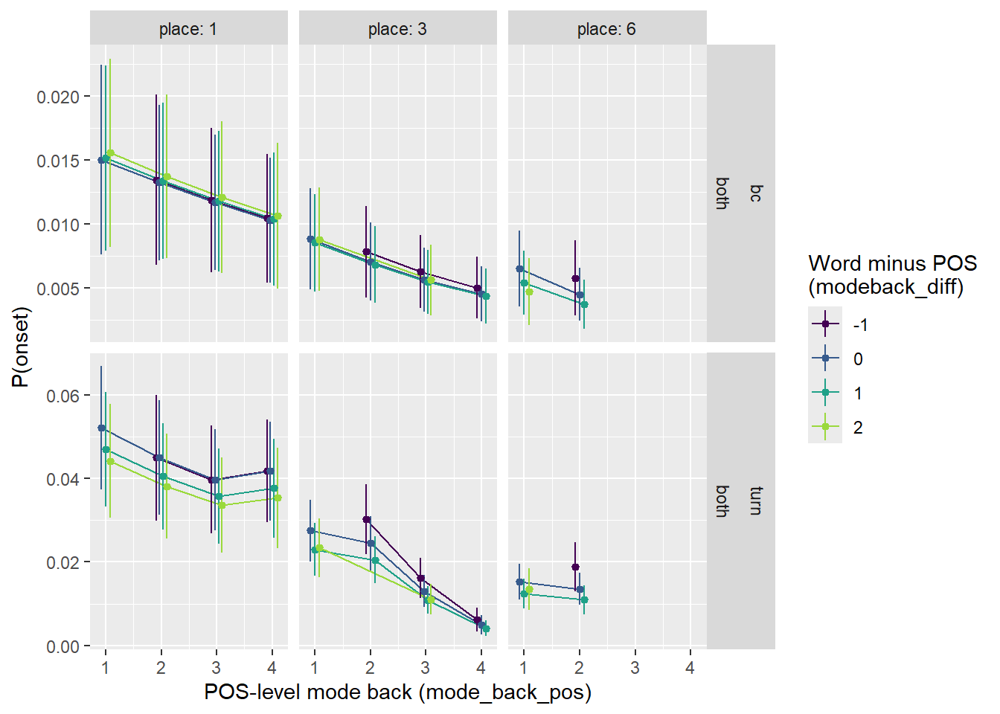
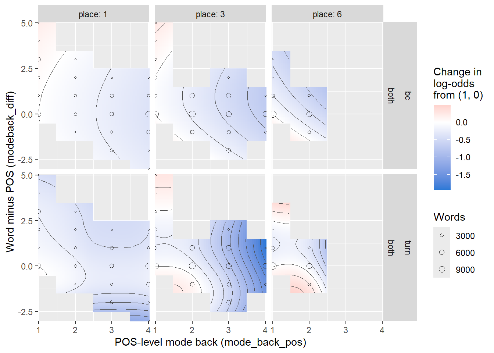
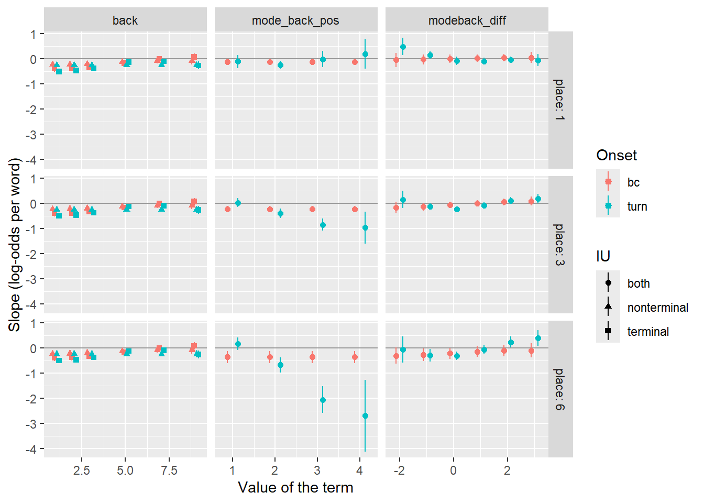
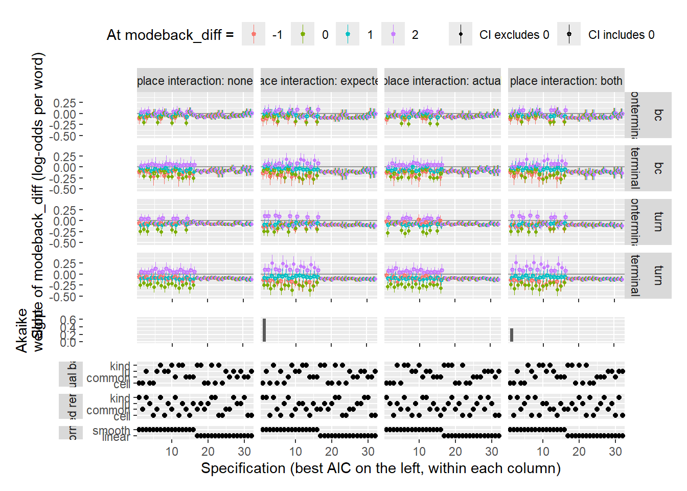

Turn / BC onsets: when does the word matter beyond its POS?
Is the word-level mode back (the most likely number of words left in the IU, given the word and its place) needed to predict backchannel (BC) and turn onsets, or is the POS-level one enough? And does the answer differ between onset types, IU types, or places in the IU? Instead of testing these one model at a time, every combination of the candidate predictors and their moderation is fitted and ranked by AIC (“Model selection”); the best model is interpreted with marginaleffects (“Main model”), and the robustness of the word-level effect across the candidate models is shown as a multiverse (“Robustness: multiverse”). All places are used, as in turn_bc_gam_allplace.qmd.
The step-by-step analyses that led to this, with Wald tests of differences between onset and IU types, are in turn_bc_pos_moderators_steps.qmd.
Data
The packages, the model cache and output helpers, and the data are set up in turn_bc_pos_moderators_data.R, shared with turn_bc_pos_moderators_steps.qmd. The data are built as in turn_bc_gam_allplace.qmd: all places, words with a word-level and a POS-level mode back. The words of turns with a BC onset (outcome: BC onset on the word) and the words of turns with a turn onset (outcome: turn onset) are stacked (stacked), as the BC and turn models in turn_bc_gam_allplace.qmd; a word in a turn with both kinds of onset appears once in each half, and each half has its own document random intercepts. cell is onset type × IU type (terminal / non-terminal).
Warning: package 'dplyr' was built under R version 4.5.3
Attaching package: 'dplyr'
The following objects are masked from 'package:stats':
filter, lag
The following objects are masked from 'package:base':
intersect, setdiff, setequal, union
Warning: package 'tidyr' was built under R version 4.5.3
Warning: package 'purrr' was built under R version 4.5.3
Warning: package 'readr' was built under R version 4.5.3
Warning: package 'ggplot2' was built under R version 4.5.3
Loading required package: nlme
Attaching package: 'nlme'
The following object is masked from 'package:dplyr':
collapse
This is mgcv 1.9-3. For overview type 'help("mgcv-package")'.
Rows: 4825 Columns: 5
── Column specification ────────────────────────────────────────────────────────
Delimiter: ","
chr (1): word
dbl (4): place, mean_back, median_back, mode_back
ℹ Use `spec()` to retrieve the full column specification for this data.
ℹ Specify the column types or set `show_col_types = FALSE` to quiet this message.
Rows: 12440 Columns: 2
── Column specification ────────────────────────────────────────────────────────
Delimiter: ","
chr (2): word, POS
ℹ Use `spec()` to retrieve the full column specification for this data.
ℹ Specify the column types or set `show_col_types = FALSE` to quiet this message.
Rows: 425 Columns: 5
── Column specification ────────────────────────────────────────────────────────
Delimiter: ","
chr (1): POS
dbl (4): place, mean_back, median_back, mode_back
ℹ Use `spec()` to retrieve the full column specification for this data.
ℹ Specify the column types or set `show_col_types = FALSE` to quiet this message.
# Words and onsets in each cellread_csv(out_file("cell_counts.csv"), show_col_types =FALSE)
# A tibble: 4 × 4
kind iu words onsets
<chr> <chr> <dbl> <dbl>
1 bc terminal 15874 332
2 bc nonterminal 25590 342
3 turn terminal 32869 1396
4 turn nonterminal 42477 1014
Model selection
All the models considered in turn_bc_pos_moderators_steps.qmd (and the POS section of turn_bc_gam_allplace.qmd) are points in one grid, so instead of reporting them one by one, every combination is fitted and ranked by AIC, and the best is the main model below.
Every model has the same backbone: an intercept and a place smooth for each cell (onset type × IU type), and document random intercepts for each onset type. On top of that, five choices:
Choice
Values
Terms in the model
Expected remainder (3)
word
word-level mode_back
pos
mode_back_pos
pos_word
mode_back_pos + modeback_diff (= word-level mode_back split into its POS part and the word’s deviation from it)
Actual remainder (3)
none
no actual remainder term
back
actual back
err
actual minus expected: back - mode_back for word and pos_word, back - mode_back_pos for pos
Form (2)
linear
one slope per term (per group, if moderated)
smooth
a smooth per term (per group, if moderated); k = 4 for mode_back_pos, k = 6 otherwise. Applies to all the remainder terms of the model together
Moderation of the expected remainder terms (4)
common
one effect for all four cells
kind
one effect per onset type (BC, turn), shared by terminal and non-terminal IUs
iu
one effect per IU type (terminal, non-terminal), shared by BC and turn onsets
cell
one effect per cell (onset type × IU type)
Moderation of the actual remainder term (4, or 1 when there is none)
same four values
as above, chosen independently of the moderation of the expected remainder
Interaction with place (4, or 2 when there is no actual remainder)
none
the remainder terms have the same effect at every place
expected
the expected remainder terms interact with place
actual
the actual remainder term interacts with place
both
all the remainder terms interact with place
An interaction with place has the same form and moderation as the term it belongs to: ti(place, x, k = c(6, k)) (by group, if moderated) in the smooth models, which holds only the interaction, so the main effects are still those of s(place) and s(x); place:x (by group) in the linear models.
The moderation of the actual remainder, and its interaction with place, only apply when there is an actual remainder term, so the count is:
Actual remainder
Expected remainder
Form
Moderation (expected)
Moderation (actual)
Place interaction
Models
none
3
2
4
1 (none to moderate)
2 (none, expected)
3 × 2 × 4 × 2 = 48
back
3
2
4
4
4
3 × 2 × 4 × 4 × 4 = 384
err
3
2
4
4
4
3 × 2 × 4 × 4 × 4 = 384
Total
816
All 816 are fitted to the same rows, so their conditional AICs are comparable. Some are the same model reparameterised (e.g. linear back and err with nested moderations); they have the same AIC and are marked in the ranking.
k_default <-6# basis size for every smooth (per margin for ti())# Basis size per variable: mode_back_pos takes too few values for k = 6k_of <-c(mode_back = k_default,mode_back_pos =4,modeback_diff = k_default,back = k_default,back_err = k_default,back_err_pos = k_default)# The variables of each choice of expected remainderexpectation_vars <-list(word ="mode_back", # word-level mode backpos ="mode_back_pos", # POS-level mode backpos_word =c("mode_back_pos", "modeback_diff") # POS-level plus the word's deviation from it)# The variable of each choice of actual remainderremainder_var <-function(remainder, expectation) {switch( remainder,none =character(0), # no termback ="back", # actual back# Actual minus expected, relative to the expectation used in the modelerr =if (expectation =="pos") "back_err_pos"else"back_err" )}# One term for one variable, given its form and moderationgrid_term <-function(var, by, form) {if (form =="linear") {# One slope, or one slope per level of the moderator (e.g. "kind:back")if (by =="common") var elsesprintf("%s:%s", by, var) } elseif (by =="common") {sprintf("s(%s, k = %d)", var, k_of[[var]]) # one smooth } else {sprintf("s(%s, by = %s, k = %d)", var, by, k_of[[var]]) # one smooth per level of the moderator }}# Its interaction with place, with the same form and moderation (ti() holds# only the interaction, so the main effects stay in s(place) and s(var))grid_place_term <-function(var, by, form) {if (form =="linear") {if (by =="common") {sprintf("place:%s", var) # one place x variable slope } else {sprintf("%s:place:%s", by, var) # one per level of the moderator } } else {# Tensor-product interaction smooth, per level of the moderator if moderatedsprintf("ti(place, %s, %sk = c(%d, %d))", var,if (by =="common") ""elsesprintf("by = %s, ", by), k_default, # basis size for place k_of[[var]] # basis size for the variable ) }}# Every combination of the five choices, one row per modelmodel_grid <-expand_grid(expectation =names(expectation_vars),remainder =c("none", "back", "err"),form =c("linear", "smooth"),exp_by =c("common", "kind", "iu", "cell"),rem_by =c("common", "kind", "iu", "cell"),place_int =c("none", "expected", "actual", "both")) %>%# Without an actual remainder there is nothing to moderate or interact with placefilter( remainder !="none"| (rem_by =="common"& place_int %in%c("none", "expected")) ) %>%mutate(rem_by =if_else(remainder =="none", NA_character_, rem_by), # NA when there's no actual remainder# Models without place interactions keep the ids they had before the# interactions were added, so their cached fits are reusedid =paste0(paste("grid", expectation, exp_by, remainder,coalesce(rem_by, "na"), form,sep ="_" ),if_else(place_int =="none", "", paste0("_pi-", place_int)) # e.g. "_pi-both" ) )# The formula of one grid rowgrid_formula <-function(row) {# Expected remainder terms exp_terms <-vapply( expectation_vars[[row$expectation]], \(v) grid_term(v, row$exp_by, row$form),"" )# Actual remainder term (none if remainder is "none") rem_terms <-vapply(remainder_var(row$remainder, row$expectation), \(v) grid_term(v, row$rem_by, row$form),"" )# Place interactions of the expected remainder terms, if any (NULL otherwise) exp_place <-if (row$place_int %in%c("expected", "both")) {vapply( expectation_vars[[row$expectation]], \(v) grid_place_term(v, row$exp_by, row$form),"" ) }# Place interaction of the actual remainder term, if any rem_place <-if (row$place_int %in%c("actual", "both")) {vapply(remainder_var(row$remainder, row$expectation), \(v) grid_place_term(v, row$rem_by, row$form),"" ) }reformulate(c("cell", # an intercept per cellsprintf("s(place, by = cell, k = %d)", k_default), # a place smooth per cell exp_terms, rem_terms, exp_place, rem_place,"s(docId, by = kind, bs = 're')"# document random intercepts per onset type ),response ="onset" )}nrow(model_grid) # 816
[1] 816
# The fitted models are too big to keep all 816 in memory at once, so each one# is fitted (or loaded from the cache), its AIC and edf are recorded, and it is# dropped again. The recorded statistics are cached too (grid_stats.rds), so a# re-render doesn't have to read every model file. Models needed later are read# back from the cache with load_grid_model().load_grid_model <-function(id) {readRDS(file.path(model_dir, paste0(id, ".rds")))}grid_stats_path <-file.path(model_dir, "grid_stats.rds") # cached AIC / edf per modelgrid_stats <-if (!refit_models &&file.exists(grid_stats_path)) {readRDS(grid_stats_path)} else {tibble(id =character(),formula =character(),edf =numeric(),AIC =numeric() )}for (i inseq_len(nrow(model_grid))) { row <- model_grid[i, ] f <-grid_formula(row) f_text <-deparse1(f) # formula as text, to check the cached statistics against# Skip models whose statistics are already recorded for this formulaif (any(grid_stats$id == row$id & grid_stats$formula == f_text)) {next } m <-fit_or_load( row$id,bam( f,data = stacked,family =binomial(link ="logit"), # onset (TRUE / FALSE) on the log-odds scalemethod ="fREML", # fast REML for the smoothing parametersdiscrete =TRUE# discretised covariates, for speed ),formula = f # refit if the cached model's formula differs )# Record the model's statistics, replacing any for an older formula grid_stats <- grid_stats %>%filter(id != row$id) %>%bind_rows(tibble(id = row$id,formula = f_text,edf =sum(m$edf), # effective degrees of freedomAIC =AIC(m) # conditional AIC ))rm(m) # drop the model before the next onegc()saveRDS(grid_stats, grid_stats_path) # save as we go, in case the run is interrupted}ranking <- model_grid %>%left_join(grid_stats, by ="id") %>%# AIC, edf and formula of each modelarrange(AIC) %>%arrange(AIC) %>%# best firstmutate(dAIC = AIC -min(AIC), # difference from the best# Reparameterisations of the same model have the same AICsame_fit_as =map_chr(seq_along(AIC), \(i) {# An earlier (better or equal) model with the same AIC, if any j <-which(abs(AIC[seq_len(i -1)] - AIC[i]) <1e-4)if (length(j)) id[j[1]] elseNA_character_ }) )invisible(save_table(ranking, "grid_ranking")) # the full ranking (saved, not printed)# The ten best distinct modelsranking %>%filter(is.na(same_fit_as)) %>%select(expectation, exp_by, remainder, rem_by, form, place_int, edf, dAIC) %>%head(10)
# A tibble: 10 × 8
expectation exp_by remainder rem_by form place_int edf dAIC
<chr> <chr> <chr> <chr> <chr> <chr> <dbl> <dbl>
1 pos_word kind back cell smooth expected 130. 0
2 pos_word kind back cell smooth both 135. 1.09
3 pos_word cell back cell smooth both 151. 8.21
4 pos_word kind back iu smooth expected 126. 9.72
5 pos_word kind back iu smooth both 127. 10.6
6 pos_word cell back cell smooth expected 146. 11.1
7 pos_word common back cell smooth both 128. 13.6
8 pos_word iu back cell smooth both 133. 13.8
9 pos_word kind back kind smooth both 131. 15.9
10 pos_word kind back kind smooth expected 126. 19.9
Summary for reporting: the best model for each choice of expected and actual remainder (other choices free), as ΔAIC from the overall best.
best_by <- ranking %>%group_by(expectation, remainder) %>%# each combination of expected and actual remainderslice_min(AIC, n =1, with_ties =FALSE) %>%# its best modelungroup() %>%select(expectation, remainder, exp_by, rem_by, form, place_int, dAIC) %>%arrange(dAIC)save_table(best_by, "grid_best_by_choice")
# A tibble: 9 × 7
expectation remainder exp_by rem_by form place_int dAIC
<chr> <chr> <chr> <chr> <chr> <chr> <dbl>
1 pos_word back kind cell smooth expected 0
2 pos back iu cell smooth expected 26.4
3 pos_word err kind kind smooth both 28.1
4 pos err kind kind smooth both 47.1
5 word back common cell smooth expected 94.7
6 word err common kind smooth both 132.
7 pos_word none kind <NA> smooth expected 698.
8 word none common <NA> smooth expected 785.
9 pos none iu <NA> smooth expected 821.
best_by
# A tibble: 9 × 7
expectation remainder exp_by rem_by form place_int dAIC
<chr> <chr> <chr> <chr> <chr> <chr> <dbl>
1 pos_word back kind cell smooth expected 0
2 pos back iu cell smooth expected 26.4
3 pos_word err kind kind smooth both 28.1
4 pos err kind kind smooth both 47.1
5 word back common cell smooth expected 94.7
6 word err common kind smooth both 132.
7 pos_word none kind <NA> smooth expected 698.
8 word none common <NA> smooth expected 785.
9 pos none iu <NA> smooth expected 821.
And the best model for each choice of interaction with place:
best_by_place <- ranking %>%group_by(place_int) %>%# each choice of interaction with placeslice_min(AIC, n =1, with_ties =FALSE) %>%# its best modelungroup() %>%select(place_int, expectation, remainder, exp_by, rem_by, form, dAIC) %>%arrange(dAIC)save_table(best_by_place, "grid_best_by_place_interaction")
# A tibble: 4 × 7
place_int expectation remainder exp_by rem_by form dAIC
<chr> <chr> <chr> <chr> <chr> <chr> <dbl>
1 expected pos_word back kind cell smooth 0
2 both pos_word back kind cell smooth 1.09
3 none pos_word back kind cell smooth 49.6
4 actual pos_word back kind cell smooth 65.8
best_by_place
# A tibble: 4 × 7
place_int expectation remainder exp_by rem_by form dAIC
<chr> <chr> <chr> <chr> <chr> <chr> <dbl>
1 expected pos_word back kind cell smooth 0
2 both pos_word back kind cell smooth 1.09
3 none pos_word back kind cell smooth 49.6
4 actual pos_word back kind cell smooth 65.8
Main model
The model with the lowest AIC in the grid.
best <- ranking[1, ] # the row of the best modelm_main <-load_grid_model(best$id) # the model itself, from the cache# Its remainder variablesmain_vars <-c( expectation_vars[[best$expectation]],remainder_var(best$remainder, best$expectation))best %>%select(expectation, exp_by, remainder, rem_by, form, place_int, edf, AIC)
The main results are the fitted curves: predicted P(onset) against each remainder term, by cell, at three places in the IU (main_places; the curves differ in shape between places only if the term interacts with place), with the other terms at their means and the document effects left out (exclude = "s(docId)"), from marginaleffects::predictions(). The grid sets kind and iu to match each cell (left to themselves, datagrid() would hold them at their most common values, and every cell would get the turn smooths), and each term runs over its 1st to 99th percentile, as the curves are poorly constrained in the sparse tails.
library(marginaleffects) # predictions() / slopes() from fitted models
Warning: package 'marginaleffects' was built under R version 4.5.3
# Prediction / slope grid with kind and iu consistent with cellcell_grid <-function(model, ...) {# One row per cell, with every other variable at its mean (or most common value) g <-datagrid(model = model, cell =levels(stacked$cell), ...)# Set kind and iu from the cell, e.g. "bc_terminal" -> bc, terminal g$kind <-factor(str_remove(as.character(g$cell), "_.*"),levels(stacked$kind) ) g$iu <-factor(str_remove(as.character(g$cell), ".*_"), levels(stacked$iu)) g}main_places <-c(1, 3, 6) # places at which the curves and slopes are shown# Moderation of a variable's effect in the main model (its place interaction,# if any, has the same moderation)moderation_of <-function(v) {if (v %in% expectation_vars[[best$expectation]]) best$exp_by else best$rem_by}# Whether the main model gives these variables the same effect in terminal and# non-terminal IUs; if so, the two IU types are lumped in the plotslump_iu <-function(vars) {all(vapply(vars, moderation_of, "") %in%c("common", "kind"))}# Each onset type's share of words in each IU type, the weights for averaging# predictions over IU typesiu_share <- stacked %>%count(kind, iu) %>%group_by(kind) %>%mutate(w = n /sum(n)) %>%ungroup() %>%select(kind, iu, w)# Grid of each cell x each place x each row of `values` (a data frame of the# varied variables), everything else at its meanvalue_grid <-function(values) { g <-cell_grid(m_main) tidyr::expand_grid( g[setdiff(names(g), c(names(values), "place"))],place = main_places, values %>%mutate(value_id =row_number()) # to match results back to values )}# Predictions over value_grid(values). With lump = TRUE they are averaged over# the two IU types within each onset type (weighted by iu_share), and iu is# "both"; otherwise there is one prediction per cell.grid_predictions <-function(values, lump, type) { g <-value_grid(values)if (lump) { g <- g %>%left_join(iu_share, by =c("kind", "iu")) %>%# weight of each rowmutate(grp_id =paste(kind, place, value_id, sep ="|")) # rows to average pr <-predictions( m_main,newdata = g,by ="grp_id", # average within onset type, place and value ...wts ="w", # ... weighted by the IU types' sharesexclude ="s(docId)", # leave out the document effectstype = type ) %>%as.data.frame() g %>%distinct(grp_id, kind, place, value_id) %>%left_join(values %>%mutate(value_id =row_number()), by ="value_id") %>%left_join( pr %>%select(grp_id, estimate, conf.low, conf.high),by ="grp_id" ) %>%mutate(onset =as.character(kind), iu ="both") %>%select( onset, iu, place,all_of(names(values)), estimate, conf.low, conf.high ) } else { pr <-predictions( m_main,newdata = g,exclude ="s(docId)", # leave out the document effectstype = type ) %>%as.data.frame()stopifnot(nrow(pr) ==nrow(g)) # one prediction per grid row, in order# Take the grid values from the grid itself g %>%transmute(onset =as.character(kind),iu =as.character(iu), place,across(all_of(names(values))),estimate = pr$estimate,conf.low = pr$conf.low,conf.high = pr$conf.high ) }}# Slopes of v over value_grid(values), on the log-odds scale. With lump = TRUE# the terminal rows are used and iu is "both": on the log-odds scale a variable# whose effect doesn't depend on the IU type has exactly the same slope in both.grid_slopes <-function(v, values, lump) { g <-value_grid(values)if (lump) { g <- g %>%filter(iu =="terminal") } s <-slopes( m_main,variables = v, # derivative with respect to this variablenewdata = g,exclude ="s(docId)", # leave out the document effectstype ="link"# log-odds scale ) %>%as.data.frame()# One row per grid row, in order; the output's copy of the focal variable# isn't the grid value, so take it from the gridstopifnot(nrow(s) ==nrow(g)) g %>%transmute(onset =as.character(kind),iu =if (lump) "both"elseas.character(iu), place,across(all_of(names(values))),estimate = s$estimate,std.error = s$std.error,conf.low = s$conf.low,conf.high = s$conf.high,p.value = s$p.value )}# Values of a variable for the curves: 60 points over its 1st to 99th percentilecurve_values <-function(v) { rng <-quantile(stacked[[v]], c(0.01, 0.99))tibble(!!v :=seq(rng[[1]], rng[[2]], length.out =60))}# Range of each variable with data at each place: from the smallest to the# largest whole-number value that at least 100 words within one place have.# The curves are cut to these ranges, so they don't show the model# extrapolating into values that hardly occur at that place (e.g. large# modeback_diff values, which are almost all IU-initial).supported_range <-lapply(main_vars, \(v) {lapply(main_places, \(p) { stacked %>%filter(abs(place - p) <=1) %>%count(value =floor(.data[[v]] +0.5)) %>%filter(n >=100) %>%summarise(lo =min(value) -0.5, hi =max(value) +0.5) %>%mutate(term = v, place = p) }) %>%bind_rows()}) %>%bind_rows()# Keep the parts of the curves within the supported range at each placecut_to_support <-function(curves) { curves %>%left_join(supported_range, by =c("term", "place")) %>%filter(x >= lo, x <= hi) %>%select(-lo, -hi)}# Predicted P(onset) against each remainder variablemain_curves <-lapply(main_vars, \(v) {grid_predictions(curve_values(v), lump =lump_iu(v), type ="response") %>%mutate(term = v, x = .data[[v]]) %>%select(term, onset, iu, place, x, estimate, conf.low, conf.high)}) %>%bind_rows() %>%cut_to_support()# One plot per variable: colour = onset type, line type = IU type, panels = placefor (v in main_vars) { p <- main_curves %>%filter(term == v) %>%ggplot(aes(x, estimate, colour = onset, fill = onset, linetype = iu)) +geom_ribbon(# 95% CIaes(ymin = conf.low, ymax = conf.high),alpha =0.12,colour =NA ) +geom_line() +# predicted P(onset)facet_wrap(~place, labeller = label_both, scales ="free_y") +# one panel per placelabs(x = v,y ="P(onset)",colour ="Onset",fill ="Onset",linetype ="IU" )print(save_plot(p, paste0("main_predictions_", v), width =11, height =4.5))}



The first derivatives of the same curves: the slope of each term (log-odds per word, from slopes()) along its range, by cell and place, with 95% confidence bands. Where a band excludes 0, P(onset) is reliably changing with the term at that value. They are on the log-odds scale, where (unlike on the probability scale) a term’s slope doesn’t depend on the values of the other terms.
# Slope of each remainder variable along its range (same values as main_curves)main_derivs <-lapply(main_vars, \(v) {grid_slopes(v, curve_values(v), lump =lump_iu(v)) %>%mutate(term = v, x = .data[[v]]) %>%select(term, onset, iu, place, x, estimate, conf.low, conf.high)}) %>%bind_rows() %>%cut_to_support() # same supported ranges as the curvesinvisible(save_table(main_derivs, "main_derivatives")) # saved, not printed# One plot per variable, in the same style as the prediction curvesfor (v in main_vars) { p <- main_derivs %>%filter(term == v) %>%ggplot(aes(x, estimate, colour = onset, fill = onset, linetype = iu)) +geom_hline(yintercept =0, colour ="grey60") +# zero slopegeom_ribbon(# 95% CIaes(ymin = conf.low, ymax = conf.high),alpha =0.12,colour =NA ) +geom_line() +# the slopefacet_wrap(~place, labeller = label_both) +# one panel per place, same y scalelabs(x = v,y ="Slope (log-odds per word)",colour ="Onset",fill ="Onset",linetype ="IU" )print(save_plot(p, paste0("main_derivatives_", v), width =11, height =4.5))}



When the main model has both the POS-level mode back and the word’s deviation from it, the two together: P(onset) against mode_back_pos, with a line for each of several values of modeback_diff, so the size of the word-level shifts can be read against the POS-level effect. A combination of the two is only shown at a place if at least 100 words within one place of it have it (some can’t occur at all, e.g. mode_back_pos = 1 with modeback_diff = −1 would be a word-level mode back of 0, and words with large differences are almost all IU-initial). Actual back is at its mean and the document effects are left out.
# Combinations of mode_back_pos and modeback_diff that at least 100 words have# within one place of each of main_placessupported_by_place <-lapply(main_places, \(p) { stacked %>%filter(abs(place - p) <=1) %>%count(mode_back_pos, modeback_diff) %>%filter(n >=100) %>%mutate(place = p)}) %>%bind_rows()# Only if the main model has both termsif (all(c("mode_back_pos", "modeback_diff") %in% main_vars)) { diff_values <--1:2# values of modeback_diff to draw (about 90% of the words)# Every combination supported at any of the places combos <- supported_by_place %>%filter(modeback_diff %in% diff_values) %>%distinct(mode_back_pos, modeback_diff) pos_by_diff <-grid_predictions( combos,lump =lump_iu(c("mode_back_pos", "modeback_diff")),type ="response"# probability scale ) %>%# Keep each combination only at the places where it is supportedsemi_join( supported_by_place,by =c("place", "mode_back_pos", "modeback_diff") ) %>%mutate(modeback_diff =factor(modeback_diff)) # a factor, for the colour scalesave_table(pos_by_diff, "main_predictions_pos_by_diff")# x = POS-level mode back, colour = word minus POS; rows = cells, columns = places p <-ggplot( pos_by_diff,aes(mode_back_pos, estimate, colour = modeback_diff, group = modeback_diff) ) +geom_line(position =position_dodge(width =0.25)) +geom_pointrange(# 95% CIaes(ymin = conf.low, ymax = conf.high),position =position_dodge(width =0.25),size =0.25 ) +facet_grid( onset + iu ~ place,scales ="free_y",labeller =labeller(place = label_both) ) +scale_colour_viridis_d(end =0.85) +labs(x ="POS-level mode back (mode_back_pos)",y ="P(onset)",colour ="Word minus POS\n(modeback_diff)" )print(save_plot(p, "main_predictions_pos_by_diff", width =10, height =9))}

The joint effect of the two as a contour plot: the change in log-odds of an onset relative to a word with mode_back_pos = 1 and modeback_diff = 0, in the same cell and at the same place (so the cells’ different base rates don’t swamp the shape, and all panels share one colour scale). At each place, only the area around combinations that at least 100 words within one place of it have is shown; the dots mark those combinations, sized by the number of words. When the two terms don’t depend on the IU type in the main model, terminal and non-terminal IUs are shown as one: on the log-odds scale they then differ only by a constant, which the change from the reference removes.
# Only if the main model has both termsif (all(c("mode_back_pos", "modeback_diff") %in% main_vars)) { lump <-lump_iu(c("mode_back_pos", "modeback_diff"))# A fine grid over the two variables, covering the combinations supported at any place pos_range <-range(supported_by_place$mode_back_pos) diff_range <-range(supported_by_place$modeback_diff) fine <- tidyr::expand_grid(mode_back_pos =seq(pos_range[1], pos_range[2], length.out =61),modeback_diff =seq(diff_range[1], diff_range[2], length.out =141) ) g <-value_grid(fine)# Lumped: the terminal rows stand for both IU types (same change from the reference)if (lump) { g <- g %>%filter(iu =="terminal") } pr <-predictions( m_main,newdata = g,exclude ="s(docId)", # leave out the document effectstype ="link"# log-odds scale ) %>%as.data.frame()stopifnot(nrow(pr) ==nrow(g)) # one prediction per grid row, in order joint <- g %>%transmute(onset =as.character(kind),iu =if (lump) "both"elseas.character(iu), place, mode_back_pos, modeback_diff,eta = pr$estimate # predicted log-odds ) %>%# Nearest whole-number combination of each grid pointmutate(pos_near =floor(mode_back_pos +0.5),diff_near =floor(modeback_diff +0.5) ) %>%# Keep grid points whose nearest combination is supported at that placesemi_join( supported_by_place,by =c("place", pos_near ="mode_back_pos", diff_near ="modeback_diff") ) %>%group_by(onset, iu, place) %>%# Change in log-odds from mode_back_pos = 1, modeback_diff = 0 in the same cell and placemutate(delta = eta - eta[which.min(abs(mode_back_pos -1) +abs(modeback_diff -0))] ) %>%ungroup() supported <- supported_by_place # the dots, by placesave_table(joint, "main_joint_pos_diff") p <-ggplot(joint, aes(mode_back_pos, modeback_diff)) +geom_raster(aes(fill = delta)) +# the change in log-oddsgeom_contour(aes(z = delta),breaks =seq(-3, 3, by =0.2), # a contour every 0.2 log-oddscolour ="grey30",linewidth =0.25 ) +geom_point(# the supported combinations, sized by number of wordsdata = supported,aes(size = n),shape =21,fill =NA,colour ="grey20" ) +facet_grid( onset + iu ~ place,labeller =labeller(place = label_both) ) +scale_fill_gradient2(# blue = less likely, red = more likely than the referencelow ="#2a78d6",mid ="white",high ="#e34948",midpoint =0 ) +scale_size_area(max_size =3) +coord_cartesian(expand =FALSE) +labs(x ="POS-level mode back (mode_back_pos)",y ="Word minus POS (modeback_diff)",fill ="Change in\nlog-odds\nfrom (1, 0)",size ="Words" )print(save_plot(p, "main_joint_pos_diff", width =10, height =10))}

Slopes at a few values of each term (log-odds per word, from slopes()), rather than an average slope: with curved smooths an average over each cell’s words mixes the steep and flat parts of the curve in proportions that differ between cells. The values cover the bulk of the data (roughly the 5th to 95th percentile; modeback_diff is 0 for over half of the words). On the log-odds scale a term’s slope at a given value doesn’t depend on the other terms, and doesn’t depend on place either unless the term interacts with place; the slopes are shown at the same three places as the curves. Cells that share a smooth (e.g. terminal and non-terminal IUs, where a term is moderated by onset type only) have the same slopes.
# Values at which each variable's slope is computedslope_points <-list(modeback_diff =-2:3,mode_back_pos =1:4,back =c(1, 2, 3, 5, 7, 9),back_err =-4:4,back_err_pos =-4:6,mode_back =1:5)# Slope of each remainder variable at those values, in each cell, at each placemain_point_slopes <-lapply(main_vars, \(v) {grid_slopes(v, tibble(!!v := slope_points[[v]]), lump =lump_iu(v)) %>%mutate(term = v, value = .data[[v]]) %>%select( term, onset, iu, place, value, estimate, std.error, conf.low, conf.high, p.value )}) %>%bind_rows()invisible(save_table(main_point_slopes, "main_point_slopes")) # saved, not printed# Slope against the variable's value; rows = places, columns = variablesp <-ggplot( main_point_slopes,aes(value, estimate, colour = onset, shape = iu)) +geom_hline(yintercept =0, colour ="grey60") +# zero slopegeom_pointrange(# 95% CIaes(ymin = conf.low, ymax = conf.high),position =position_dodge(width =0.5),size =0.3 ) +facet_grid( place ~ term,scales ="free_x",labeller =labeller(place = label_both) ) +labs(x ="Value of the term",y ="Slope (log-odds per word)",colour ="Onset",shape ="IU" )save_plot(p, "main_point_slopes", width =10, height =8)

Robustness: multiverse
Does the word-level mode back predict onsets beyond the actual remainder and the POS-level mode back, in each cell, whichever model is used? The question is defined in the 128 grid models with mode_back_pos + modeback_diff and actual back (32 combinations of form and moderation, each with the four choices of interaction with place) (in the err models the modeback_diff effect includes the effect of the actual remainder moving with it, so it answers a different question). For each of them, the effect is the slope of modeback_diff in each cell at modeback_diff = −1, 0, 1 and 2 (about 90% of the words) and at the median place (multiverse_place; this only matters in models where the expected remainder interacts with place), on the log-odds scale (slopes(), document effects excluded), which puts linear and smooth fits on the same footing; in the linear models the four values have the same slope. The models are ordered by AIC and shown with their Akaike weights in the full grid (Steegen et al. 2016; Simonsohn, Simmons & Nelson 2020).
The 128 estimates come from the same data, so they are not independent tests; the point is whether the conclusion depends on the specification, not how many of them are significant.
library(patchwork) # stacking ggplots with /# Akaike weights over the distinct fits in the whole gridweights <- ranking %>%filter(is.na(same_fit_as)) %>%# each distinct model oncemutate(weight =exp(-dAIC /2) /sum(exp(-dAIC /2))) %>%# relative likelihood, normalisedselect(id, weight)# The models in which the question is defined: POS + word minus POS, with actual backmultiverse_specs <- ranking %>%filter(expectation =="pos_word", remainder =="back") %>%left_join(weights, by ="id") %>%mutate(weight =coalesce(weight, 0), # reparameterised duplicates get no weight of their ownplace_int =factor(place_int, c("none", "expected", "actual", "both")) ) %>%# Ordered by AIC within each choice of interaction with placegroup_by(place_int) %>%mutate(spec_rank =row_number()) %>%ungroup()multiverse_points <--1:2# values of modeback_diff at which the slope is takenmultiverse_place <-median(stacked$place) # place at which the slope is taken# Cached, as computing the slopes for all these models takes a whilemultiverse_path <-file.path(model_dir, "multiverse_point_slopes_v3.rds")multiverse_slopes <-if (!refit_models &&file.exists(multiverse_path)) {readRDS(multiverse_path)} else {NULL}# Recompute if there is no cache, or it is for a different set of models / fitsif (is.null(multiverse_slopes) ||!setequal(unique(multiverse_slopes$id), multiverse_specs$id) ||!identical( multiverse_slopes %>%distinct(id, AIC) %>%arrange(id) %>%pull(AIC), multiverse_specs %>%arrange(id) %>%pull(AIC) )) {# For each model, the slope of modeback_diff at each value, in each cell multiverse_slopes <-lapply(multiverse_specs$id, \(x) { m <-load_grid_model(x) # one model at a time, from the cache grid <-cell_grid(m)# Each cell x each value of modeback_diff, at the median place grid <- tidyr::expand_grid( grid[setdiff(names(grid), c("modeback_diff", "place"))],place = multiverse_place,modeback_diff = multiverse_points ) s <-slopes( m,variables ="modeback_diff",newdata = grid,exclude ="s(docId)", # leave out the document effectstype ="link"# log-odds scale ) %>%as.data.frame()# One row per grid row, in order (see main_point_slopes above)stopifnot(nrow(s) ==nrow(grid)) s %>%mutate(cell = grid$cell, value = grid$modeback_diff) %>%transmute(id = x,AIC =AIC(m), # stored to check the cache against later cell, value, estimate, conf.low, conf.high, p.value ) }) %>%bind_rows()saveRDS(multiverse_slopes, multiverse_path)}# The slopes with each model's choices, rank and weightmultiverse <- multiverse_slopes %>%select(-AIC) %>%left_join(multiverse_specs, by ="id") %>%separate(cell, c("onset", "iu"), sep ="_", remove =FALSE) %>%mutate(excludes_zero = conf.high <0| conf.low >0) # whether the 95% CI excludes 0invisible(save_table( multiverse %>%select( place_int, spec_rank, id, form, exp_by, rem_by, dAIC, weight, cell, value, estimate, conf.low, conf.high, p.value ),"multiverse_slopes")) # saved, not printed
# Estimates by specification, one row of panels per cell and one column per# choice of interaction with place (ordered by AIC within each); the values of# modeback_diff are side by side within each specification. The three stacked# plots have the same columns and x axes, so a column of points is one# specification.spec_x <-scale_x_continuous(expand =expansion(add =0.5)) # same x axis in all three plotsint_labels <-labeller(place_int = \(x) paste("place interaction:", x)) # column titles# Top: the slope estimatesp_est <- multiverse %>%mutate(value =factor(value), # a factor, for the colour scaleci =if_else(excludes_zero, "CI excludes 0", "CI includes 0") ) %>%ggplot(aes(spec_rank, estimate, colour = value, shape = ci)) +geom_hline(yintercept =0, colour ="grey60") +# zero slopegeom_pointrange(# estimate and 95% CIaes(ymin = conf.low, ymax = conf.high),position =position_dodge(width =0.7), # the four values side by sidesize =0.15,linewidth =0.3 ) +facet_grid( onset + iu ~ place_int, # rows = cells, columns = place interactionscales ="free_x",space ="free_x",labeller = int_labels ) +scale_shape_manual(values =c("CI excludes 0"=16, "CI includes 0"=1)) +# filled / open spec_x +labs(x =NULL,y ="Slope of modeback_diff (log-odds per word)",colour ="At modeback_diff =",shape =NULL ) +theme(axis.text.x =element_blank(), legend.position ="top")# Middle: each model's Akaike weightp_weight <- multiverse_specs %>%ggplot(aes(spec_rank, weight)) +geom_col() +facet_grid(. ~ place_int, scales ="free_x", space ="free_x") +# same columns as above spec_x +labs(x =NULL, y ="Akaike\nweight") +theme(strip.text =element_blank()) +# column titles only on the top plottheme(axis.text.x =element_blank())# Bottom: each model's choicesp_spec <- multiverse_specs %>%transmute( place_int, spec_rank,form = form,`expected remainder`= exp_by,`actual back`= rem_by ) %>%# One row per model and choicepivot_longer(-c(place_int, spec_rank),names_to ="choice",values_to ="option" ) %>%ggplot(aes(spec_rank, option)) +geom_point(size =1.5) +# a dot at the option each model takesfacet_grid( choice ~ place_int,scales ="free",space ="free",switch ="y" ) + spec_x +labs(x ="Specification (best AIC on the left, within each column)",y =NULL ) +theme(strip.placement ="outside", strip.text.x =element_blank())p <- p_est / p_weight / p_spec +plot_layout(heights =c(8, 1, 3)) # stack the threesave_plot(p, "multiverse", width =18, height =11)

Summary per cell and value of modeback_diff: the range of estimates, how many intervals exclude 0, and the Akaike-weighted average estimate (weights renormalised over the models in each column). The full table is saved to multiverse_summary.csv; only the rows for modeback_diff = 0 (over half of the words) are printed:
multiverse %>%group_by(place_int, onset, iu, value) %>%summarise(specifications =n(), # number of modelsmin_estimate =min(estimate), # range of the estimatesmax_estimate =max(estimate),n_negative =sum(estimate <0), # how many are negativen_ci_excludes_zero =sum(excludes_zero), # how many CIs exclude 0weighted_estimate =sum(weight * estimate) /sum(weight), # Akaike-weighted mean.groups ="drop" ) %>%save_table("multiverse_summary") %>%filter(value ==0) # print only these rows
# A tibble: 16 × 10
place_int onset iu value specifications min_estimate max_estimate
<fct> <chr> <chr> <int> <int> <dbl> <dbl>
1 none bc nonterminal 0 32 -0.214 0.0387
2 none bc terminal 0 32 -0.253 -0.0260
3 none turn nonterminal 0 32 -0.260 -0.0277
4 none turn terminal 0 32 -0.321 -0.0793
5 expected bc nonterminal 0 32 -0.195 0.0304
6 expected bc terminal 0 32 -0.274 -0.0403
7 expected turn nonterminal 0 32 -0.258 -0.0517
8 expected turn terminal 0 32 -0.363 -0.0948
9 actual bc nonterminal 0 32 -0.236 0.0186
10 actual bc terminal 0 32 -0.251 -0.0321
11 actual turn nonterminal 0 32 -0.292 -0.0388
12 actual turn terminal 0 32 -0.318 -0.0847
13 both bc nonterminal 0 32 -0.198 0.0284
14 both bc terminal 0 32 -0.275 -0.0420
15 both turn nonterminal 0 32 -0.257 -0.0538
16 both turn terminal 0 32 -0.357 -0.0956
# ℹ 3 more variables: n_negative <int>, n_ci_excludes_zero <int>,
# weighted_estimate <dbl>